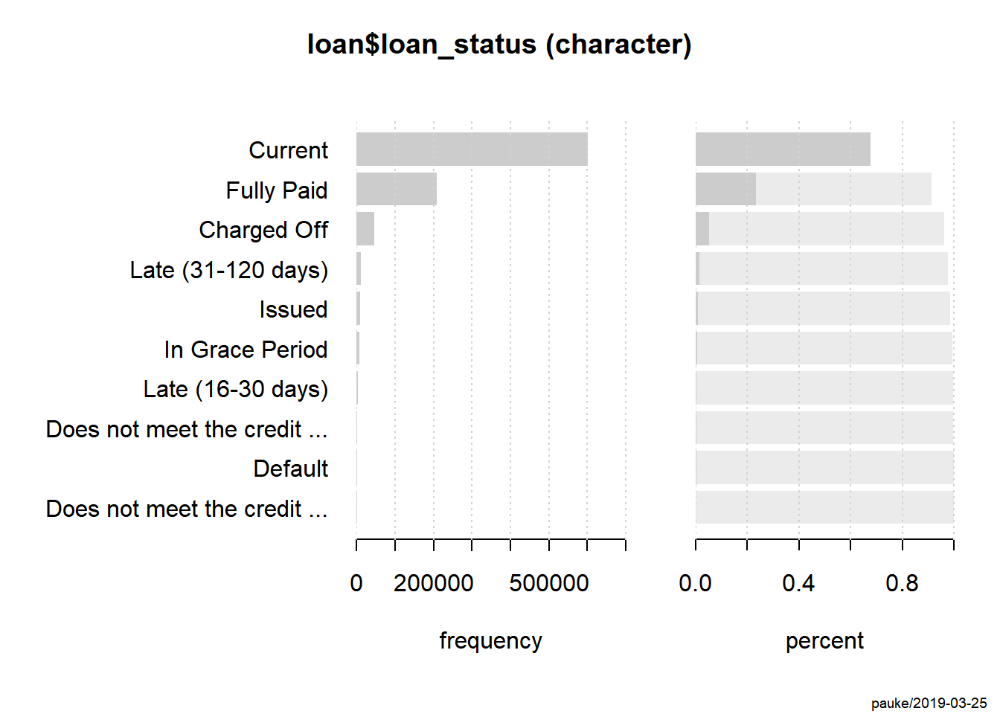
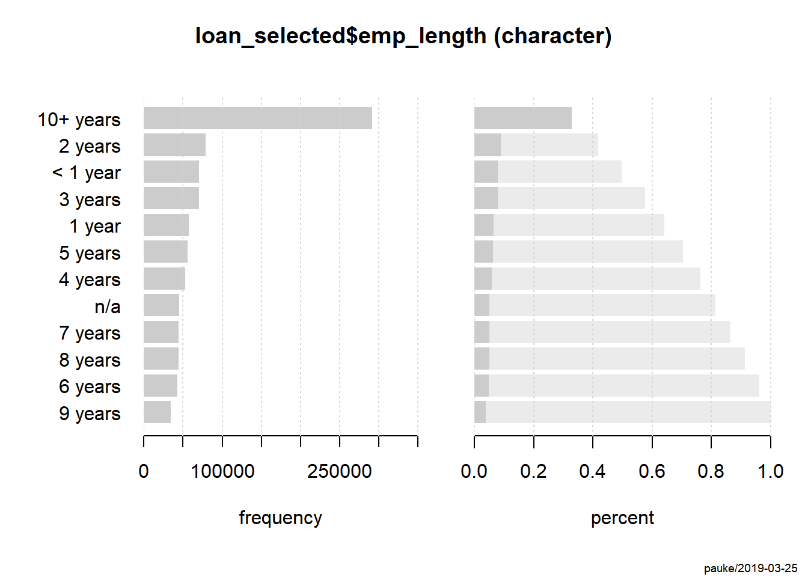
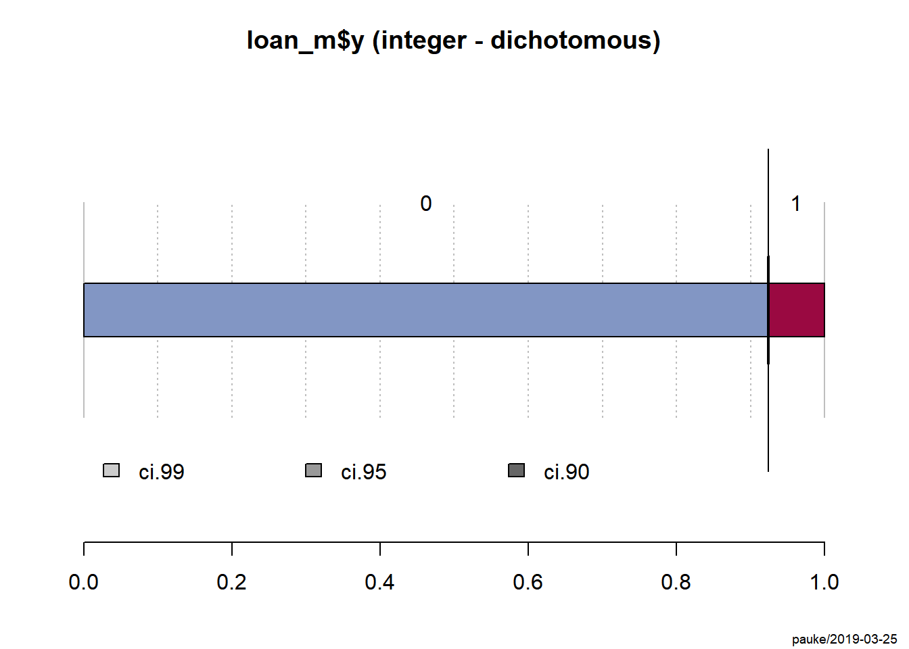
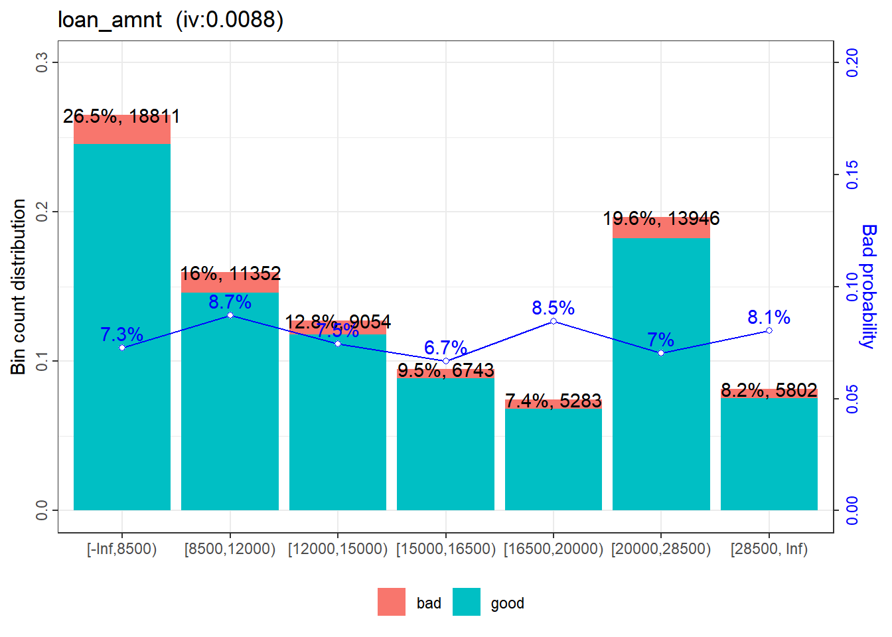
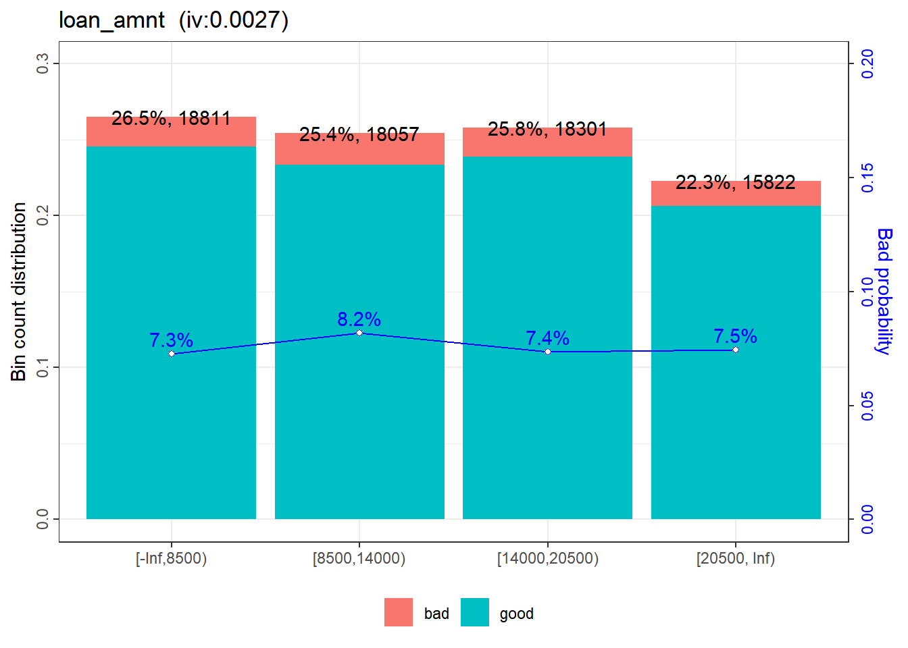
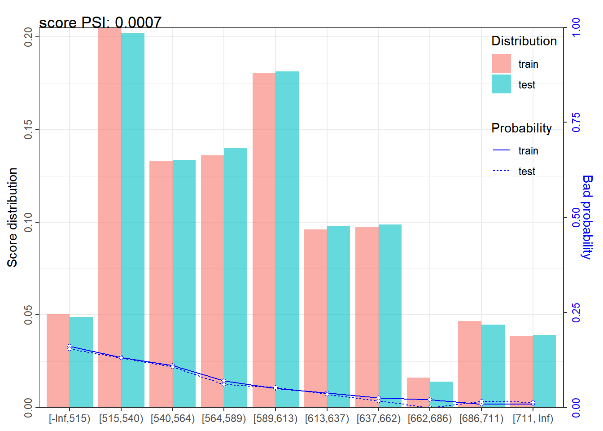

以R为工具展开的信用评分卡模型讨论并不少见，一方面，逻辑回归模型作为基础工具，已经有不少包将使用过程打磨的逞心如意；另一方面，R中丰富的机器学习分类算法，也为评分卡模型提供了更为多样的选择。
同时，现有的讨论也存在一个明显问题，多数讨论仅停留在如何根据算法构造出模型，并基于一般模型的评价方式，评价选择出一个适用性和有效性兼具的模型。但着墨于模型与最终可用评分卡之间的文章依然鲜少可见，使用选出的模型产出评分卡刻度表似乎成为可有可无的步骤，而对于一般评分卡模型稳定性的评价也无从谈起。因此，本文将会重点讨论，由模型选出到最终评分卡建立过程，以及一个模型向最终评分卡转化过程中需要注意的点和使用工具的讨论。
本文使用Lending Club Loan Data作为案例数据，该数据集的探索性分析已有很多不错的kernel完成了，本文仅作简单介绍，就不再敷言全程。具体内容可参看以下kernel：
同时，本文在评分卡构建部分使用scorecard包完成，具体使用案例也可参见这个演示。
数据准备
数据集可由Lending Club Loan Data获得。
该数据集结果变量y为loan_status，其基本情况为：
Desc(loan$loan_status)## -------------------------------------------------------------------------
## loan$loan_status (character)
##
## length n NAs unique levels dupes
## 887'379 887'379 0 10 10 y
## 100.0% 0.0%
##
## level freq perc cumfreq cumperc
## 1 Current 601'779 67.8% 601'779 67.8%
## 2 Fully Paid 207'723 23.4% 809'502 91.2%
## 3 Charged Off 45'248 5.1% 854'750 96.3%
## 4 Late (31-120 days) 11'591 1.3% 866'341 97.6%
## 5 Issued 8'460 1.0% 874'801 98.6%
## 6 In Grace Period 6'253 0.7% 881'054 99.3%
## 7 Late (16-30 days) 2'357 0.3% 883'411 99.6%
## 8 Does not meet the credit policy. Status:Fully Paid 1'988 0.2% 885'399 99.8%
## 9 Default 1'219 0.1% 886'618 99.9%
## 10 Does not meet the credit policy. Status:Charged Off 761 0.1% 887'379 100.0%
可以看出，该变量不是一般意义的good、bad的y变量。为了更好、更准确的建立模型，根据该数据集的说明，可归类为：
loan <- loan[,y :=
ifelse(loan_status %in% c("Charged Off", "Default",
"Does not meet the credit policy. Status:Charged Off",
"In Grace Period","Late (16-30 days)",
"Late (31-120 days)"),"bad","good")]
loan <- loan[,y := factor(y,levels = c("bad","good"))]
knitr::kable(Desc(loan$y)[[1]][["freq"]])| level | freq | perc | cumfreq | cumperc |
|---|---|---|---|---|
| bad | 67429 | 0.0759867 | 67429 | 0.0759867 |
| good | 819950 | 0.9240133 | 887379 | 1.0000000 |
变量筛选
基于Credit Risk Modelling [EDA & Classification]和Lending Club Loan Analysis这两篇文章的结论，结合日常业务经验。考虑选择以下变量构成最后的模型：
- loan_amnt , 贷款总额
- int_rate , 利率
- revol_bal , 复贷额
- emp_length , 工作时长
- home_ownership , 房产情况
- annual_inc , 年收入
- term, 期限
- dti, 收入负债比
- purpose 目的
关于这些变量的具体分布情况，此处就不赘述，可参考以上提到的两篇文章。
此外，scorecard包提供了一个变量粗筛var_filter函数可供参考，其设定为删除信息值<0.02、缺失率>95%、单类别比例>95%的变量。
loan_selected <- loan[,c("loan_amnt","int_rate","dti",
"purpose","term","annual_inc","home_ownership","emp_length","revol_bal","y")]
loan_m <- var_filter(loan_selected,y = "y")## [INFO] filtering variables ...names(loan_m)## [1] "loan_amnt" "int_rate" "dti" "purpose"
## [5] "term" "annual_inc" "home_ownership" "revol_bal"
## [9] "y"通过对之前选出来的变量进行检验，可以发现只有「emp_length」变量没有通过筛选。进一步看这个变量的具体情况：
Desc(loan_selected$emp_length)## -------------------------------------------------------------------------
## loan_selected$emp_length (character)
##
## length n NAs unique levels dupes
## 887'379 887'379 0 12 12 y
## 100.0% 0.0%
##
## level freq perc cumfreq cumperc
## 1 10+ years 291'569 32.9% 291'569 32.9%
## 2 2 years 78'870 8.9% 370'439 41.7%
## 3 < 1 year 70'605 8.0% 441'044 49.7%
## 4 3 years 70'026 7.9% 511'070 57.6%
## 5 1 year 57'095 6.4% 568'165 64.0%
## 6 5 years 55'704 6.3% 623'869 70.3%
## 7 4 years 52'529 5.9% 676'398 76.2%
## 8 n/a 44'825 5.1% 721'223 81.3%
## 9 7 years 44'594 5.0% 765'817 86.3%
## 10 8 years 43'955 5.0% 809'772 91.3%
## 11 6 years 42'950 4.8% 852'722 96.1%
## 12 9 years 34'657 3.9% 887'379 100.0%
ivs <- iv(loan_selected, y = "y")
ivs[variable=="emp_length",]## variable info_value
## 1: emp_length 0.008230418「emp_length」在缺失率>95%、单类别比例>95%这两条上都没有问题，但其信息值（Information Value, IV）却低于0.02，可排除出建模变量队列。关于信息值的具体含义，可参看?iv。
原数据88.73万的量，显得过于冗杂，本文为之后建模效率考虑，从中等比抽取对应的样本作为本次接下来建模所有数据。
trainIndex <- createDataPartition(loan_m$y, p = .08,
list = FALSE,
times = 1)
loan_mp <- loan_m[trainIndex,]
Desc(loan_m$y)## -------------------------------------------------------------------------
## loan_m$y (integer - dichotomous)
##
## length n NAs unique
## 887'379 887'379 0 2
## 100.0% 0.0%
##
## freq perc lci.95 uci.95'
## 0 819'950 92.4% 92.3% 92.5%
## 1 67'429 7.6% 7.5% 7.7%
##
## ' 95%-CI Wilson
WOE分箱
bin <- woebin(loan_mp, y = "y",method = "chimerge")## [INFO] creating woe binning ...#分箱和具体的切分情况示例
bin$annual_inc## variable bin count count_distr good bad badprob
## 1: annual_inc [-Inf,40000) 11155 0.15713259 10025 1130 0.10129987
## 2: annual_inc [40000,45000) 4779 0.06731839 4370 409 0.08558276
## 3: annual_inc [45000,50000) 4826 0.06798045 4362 464 0.09614588
## 4: annual_inc [50000,75000) 22582 0.31809666 20853 1729 0.07656541
## 5: annual_inc [75000,110000) 16978 0.23915708 15897 1081 0.06367063
## 6: annual_inc [110000, Inf) 10671 0.15031483 10106 565 0.05294724
## woe bin_iv total_iv breaks is_special_values
## 1: 0.31859295 0.01826348129 0.05116454 40000 FALSE
## 2: 0.13265416 0.00125330606 0.05116454 45000 FALSE
## 3: 0.26065589 0.00516012620 0.05116454 50000 FALSE
## 4: 0.01150267 0.00004229377 0.05116454 75000 FALSE
## 5: -0.18678658 0.00771058993 0.05116454 110000 FALSE
## 6: -0.38260157 0.01873474093 0.05116454 Inf FALSEscorecard包有具体的展示分享状况的绘图工具：
woebin_plot(bin$loan_amnt)## $loan_amnt
通过基于绘图工具给出的图，可以依据以下使用要点对自动产生的分享方案进行检视：
- 坏客户率或者WOE值趋势线，最多不超过一个拐点，最好是单调的
- 每个分箱的样本数量占比最好大于5%
验视数据及所有字段后，发现仅有loan_amnt字段的分箱还有待改进，scorecard包提供了手动调节的工具：
break_adj = list(
loan_amnt=c(8500,14000,20500))
bins_adj = woebin(
loan_mp, y="y",
breaks_list=break_adj,
print_step=0)## [INFO] creating woe binning ...## Warning in check_breaks_list(breaks_list, xs): There are 7 x variables that
## donot specified in breaks_list are using optimal binning.woebin_plot(bins_adj$loan_amnt)## $loan_amnt
分割建模数据集
使用caret的切分工具，获得训练集的坏贷款比例与总体基本一致。
set.seed(6715)
trainIndex <- createDataPartition(loan_mp$y, p = .85,
list = FALSE,
times = 1)
loan_mTrain <- loan_mp[ trainIndex,]
loan_mTest <- loan_mp[-trainIndex,]
knitr::kable(Desc(loan_mTrain$y)[[1]][["freq"]])| level | freq | perc | cumfreq | cumperc |
|---|---|---|---|---|
| 0 | 55754 | 0.9239514 | 55754 | 0.9239514 |
| 1 | 4589 | 0.0760486 | 60343 | 1.0000000 |
最终woe分箱后的训练集和测试集：
train_woe = woebin_ply(
loan_mTrain, bins_adj)## [INFO] converting into woe values ...test_woe = woebin_ply(
loan_mTest, bins_adj)## [INFO] converting into woe values ...模型建立预评估
模型建立
glm模型不同类型都带入进行尝试，从而能够选出更好的模型。相关的介绍可以参阅此处。
mlog_logit <- glm(y ~.,family = binomial(link = logit), data = train_woe)
mlog_probit <- glm(y ~.,family = binomial(link = probit), data = train_woe)
mlog_cloglog <- glm(y ~.,family = binomial(link = cloglog), data = train_woe)此外，其他还可以用到的模型还可参考以下文章：
- [讨论二项式数据不平衡问题的解决方法和相应模型]](https://shiring.github.io/machine_learning/2017/04/02/unbalanced)
模型评估
#根据不同类型的预测
pred_logit <- predict(mlog_logit, newdata = test_woe, type = "response")
pred_probit <- predict(mlog_probit, newdata = test_woe, type = "response")
pred_cloglog <- predict(mlog_cloglog, newdata = test_woe, type = "response")
library(pROC)## Type 'citation("pROC")' for a citation.##
## 载入程辑包：'pROC'## The following objects are masked from 'package:stats':
##
## cov, smooth, varroc_logit <- roc(test_woe[,y], pred_logit)
roc_probit <- roc(test_woe[,y], pred_probit)
roc_cloglog <- roc(test_woe[,y], pred_cloglog)
roc_logit##
## Call:
## roc.default(response = test_woe[, y], predictor = pred_logit)
##
## Data: pred_logit in 9859 controls (test_woe[, y] 0) < 789 cases (test_woe[, y] 1).
## Area under the curve: 0.6928roc_probit##
## Call:
## roc.default(response = test_woe[, y], predictor = pred_probit)
##
## Data: pred_probit in 9859 controls (test_woe[, y] 0) < 789 cases (test_woe[, y] 1).
## Area under the curve: 0.6928roc_cloglog##
## Call:
## roc.default(response = test_woe[, y], predictor = pred_cloglog)
##
## Data: pred_cloglog in 9859 controls (test_woe[, y] 0) < 789 cases (test_woe[, y] 1).
## Area under the curve: 0.6928可以看出三类逻辑回归函数的ROC值不存在明显区别，且基本达到可用的范围内（大于0.7）。此处选用针对不平衡数据的mlog_cloglog作为进一步操作的模型。
评分刻度建立
scorecard包提供了适用于glm的评分卡输出函数scorecard::scorecard。
card = scorecard(bins_adj, mlog_cloglog)
card[["annual_inc"]]## variable bin count count_distr good bad badprob
## 1: annual_inc [-Inf,50000) 20760 0.2924314 18757 2003 0.09648362
## 2: annual_inc [50000,75000) 22582 0.3180967 20853 1729 0.07656541
## 3: annual_inc [75000,110000) 16978 0.2391571 15897 1081 0.06367063
## 4: annual_inc [110000, Inf) 10671 0.1503148 10106 565 0.05294724
## woe bin_iv total_iv breaks is_special_values points
## 1: 0.26453633 0.02290092624 0.04938855 50000 FALSE -9
## 2: 0.01150267 0.00004229377 0.04938855 75000 FALSE 0
## 3: -0.18678658 0.00771058993 0.04938855 110000 FALSE 6
## 4: -0.38260157 0.01873474093 0.04938855 Inf FALSE 13通过输出的评分卡输出对应的分数。
train_score = scorecard_ply(loan_mTrain, card, only_total_score=F, print_step=0)
test_score = scorecard_ply(loan_mTest, card, only_total_score=F, print_step=0) 同时还有稳定性指数（population stability index, PSI）函数
psi <- perf_psi(
score = list(train = train_score, test = test_score),
label = list(train = loan_mTrain$y, test = loan_mTest$y) )
knitr::kable(psi$psi)| variable | dataset | psi |
|---|---|---|
| loan_amnt_points | train_test | 0.0017198 |
| int_rate_points | train_test | 0.0001336 |
| dti_points | train_test | 0.0002867 |
| purpose_points | train_test | 0.0001337 |
| term_points | train_test | 0.0010313 |
| annual_inc_points | train_test | 0.0002852 |
| home_ownership_points | train_test | 0.0001968 |
| revol_bal_points | train_test | 0.0003156 |
| score | train_test | 0.0006507 |
psi$pic$score